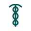

Mein Stack
 Geteiltes Gedächtnis
Geteiltes Gedächtnis
Meine Harnesses.
Mehrere Harnesses parallel — bewusst. Ich will sehen, welches Setup welche Aufgabe besser macht und wo die Grenzen liegen. Plus Obsidian darunter — das gemeinsame Gedächtnis.
Aktiv

OpenClaw + Claude Code
Johns Master · CLI · lokal
- Identity-Files, 11 Skills, Hooks, Heartbeat — vieles selbst gebaut
- Läuft als CLI in Claude Code — Anthropic-Subscription statt API-Token, nur Usage-Limits
- Mein erster Agent — entstanden im Bauen, nicht im Planen
- Discord-Hub, Telegram, Kanban-Board, MCPs (Obsidian, Excalidraw, GitHub)
Aktiv
Claude Desktop App
Claude Code in der GUI · Multi-Session
- Hier überwache ich OpenClaw und arbeite parallel an anderen Projekten
- Mehrere Claude-Code-Sessions in einem Fenster, Drag-and-drop-Panes, integriertes Terminal
- Andere Arbeit als bei John — Planung, Ad-hoc-Aufgaben, kurzes Sparring
- ChatGPT und claude.ai parallel als reine Chat-Tools, nicht als Harness
Aktiv

Hermes
Joannas Heimat · GPT-5.5 · Open-Source
- Jünger als OpenClaw — Open-Source unter MIT-Lizenz
- Persistentes Memory wächst autonom über Sessions — kein manuelles Pflegen
- Self-Improving Skills — werden nach komplexen Tasks angelegt und schärfen sich im Einsatz
Angedacht
Hermes lokal
Gemma 4 · on-device · privacy-first
- Hermes-Setup mit lokalem Open-Weights-Modell statt Cloud-Provider
- Daten verlassen den Mac nicht — kein Token-Counter, keine Cloud-Kosten
- Reizt mich — alles bleibt auf dem Mac, kostet nichts außer Strom
Obsidian Vault
Alles, was Wissen ist, liegt hier — Memory, Drafts, Logs, Projekt-Notizen, Persona-Dokumentation. Alle Harnesses greifen via REST-API und MCP-Server drauf zu. Ausnahme: die Identity-Master-Files von OpenClaw und Hermes selbst — die liegen lokal bei den Harnesses, nicht im Vault.